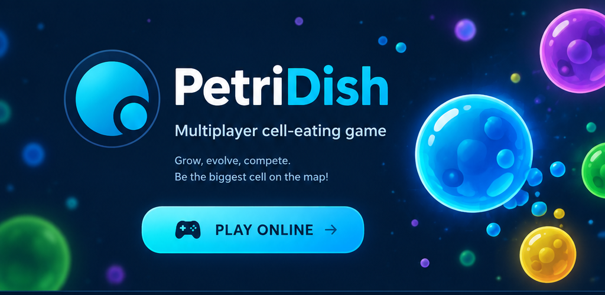

Download ClientСкачать клиент
Choose your platform and get the game.Выбери свою платформу и забирай игру.
Windowsv5.0.0 · no installerбез установки
↓ Download↓ Скачать
macOSApple Silicon
↓ Download↓ Скачать
macOSIntel
↓ Download↓ Скачать
Android5.1+ · older phonesстарые телефоны
↓ Download↓ Скачать
Other versionsДругие версии Java, stores and moreJava, сторы и прочее ⌄
MirrorsЗеркала
If the main download is unavailable, try one of these mirrors.Если основная загрузка недоступна, попробуй одно из зеркал.